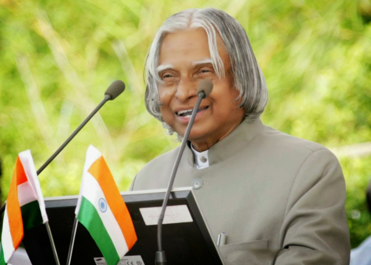

Dr. A. P. J. Abdul Kalam
Avul Pakir Jainulabdeen Abdul Kalam (1931–2015) was an Indian aerospace scientist and the 11th President of India. Widely loved as the “People’s President,” he was a pioneer of India’s missile and nuclear programs and inspired millions through his humility, teachings, and vision for a developed India. His life continues to motivate students and young minds across the nation.
Learn More